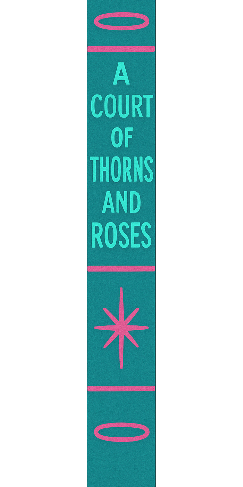

The Library Sector
Select a volume for analysis.

Select a volume for analysis.
"Nineteen-year-old Feyre Archeron is a huntress struggling to provide for her family in a harsh and unforgiving world. While hunting in the woods bordering the faerie realm, she kills a wolf, unaware that it is actually a fae. As punishment, she is taken from her home and brought to the Spring Court, a magical realm ruled by the enigmatic High Lord Tamlin.
Initially filled with fear and resentment, Feyre gradually adjusts to the luxurious and enchanting world of the fae. She discovers that the stories she's always heard about the fae are not entirely true, and she finds herself drawn to Tamlin despite her initial animosity.
However, a dark shadow looms over the faerie lands. A blight is spreading, and a malevolent force threatens to destroy everything.
Feyre learns that the curse afflicting the fae is tied to the powerful and dangerous High Fae Amarantha, who rules the Night Court. To save Tamlin and his court, Feyre must embark on a perilous journey, facing deadly trials and confronting her own fears and prejudices. In doing so, she uncovers ancient secrets, discovers her own hidden strength, and learns that love can blossom in the most unexpected of places."
"In a world where dragons and their riders hold immense power, twenty-year-old Violet Sorrengail's life is upended when her commanding general mother forces her to join the dragon riders quadrant at Basgiath War College. Physically smaller and seemingly less capable than her peers, Violet faces near-certain death in the brutal and competitive training.
Basgiath is a place where bonds with dragons are forged, alliances are fragile, and survival is a daily struggle. Violet must overcome her physical limitations, navigate treacherous politics, and earn the respect of both her fellow riders and the formidable dragons themselves.
Among them is Xaden Riorson, the wing leader and son of the rebellion leader her mother executed – a man Violet has every reason to fear and distrust, yet finds herself increasingly drawn to.
As Violet fights to survive the grueling training and the deadly missions beyond the academy walls, she uncovers dangerous secrets about the war they are fighting and the true nature of the dragons. She must forge an unbreakable bond with her own dragon, learn to harness her unique abilities, and decide who to trust in a world where loyalty is a luxury and betrayal can be fatal. The fate of their kingdom may very well rest on her small shoulders."
"Seventeen-year-old Lucinda aka Luce Price is sent to Sword & Cross, a reform school for troubled teens, after being blamed for a mysterious fire that killed her boyfriend. Adjusting to the strange and unsettling atmosphere of the school, Luce finds herself drawn to two enigmatic students: the brooding and intense Daniel Grigori, and the charming but dangerous Cam Briel.
Luce experiences strange déjà vu moments, feeling like she's met Daniel before, and is haunted by shadowy figures she can't explain. As she navigates the complex social dynamics of Sword & Cross and tries to understand her inexplicable connection to Daniel, she uncovers a centuries-old curse and a forbidden love story.
Daniel and Cam are revealed to be fallen angels, locked in an eternal battle over Luce, who is a Nephilim, a mortal descendant of angels. Luce's past lives are intertwined with theirs, and her encounters with them trigger memories of those past lives, often ending in tragedy. She must unravel the secrets of her past, understand her true identity, and choose between the two angels vying for her attention, all while trying to break the curse that has plagued her existence for millennia. The stakes are high, as the choices she makes could have eternal consequences."
"Orphaned Harry Potter lives a miserable life with his abusive aunt and uncle, the Dursleys, who hide the truth about his magical heritage. On his eleventh birthday, Harry learns he is a wizard and is invited to attend Hogwarts School of Witchcraft and Wizardry.
At Hogwarts, Harry discovers a world beyond his wildest imagination, makes lifelong friends in Ron Weasley and Hermione Granger, and learns about his own past, including the tragic death of his parents and his survival of the dark wizard Lord Voldemort's killing curse. Voldemort, who seeks to regain power and establish a new reign of terror, is the looming threat throughout Harry's years at Hogwarts.
As Harry and his friends navigate the challenges of school, they also become increasingly involved in the fight against Voldemort and his followers. They uncover dark secrets, face dangerous creatures, and learn about the power of friendship, love, and sacrifice. Over seven years, Harry grows from an unaware boy into a courageous young man destined to confront his nemesis in a final battle that will determine the fate of the wizarding world. The series explores themes of good versus evil, prejudice, loss, and the enduring power of hope."
"In the kingdom of Adarlan, where magic has been outlawed and the king rules with an iron fist, eighteen-year-old assassin Celaena Sardothien is given a chance at freedom. Instead of rotting in the salt mines of Endovier, she's offered a deal: compete against other skilled criminals to become the King's Champion. If she wins, she'll earn her freedom after four years of service.
Drawn into the opulent world of the royal court, Celaena finds herself facing dangerous trials, cunning rivals, and unexpected alliances. As she navigates the treacherous politics and deadly challenges, she also finds herself caught between the charming Captain of the Guard, Chaol Westfall, and the enigmatic Crown Prince Dorian Havilliard.
But something sinister lurks within the castle walls. Assassins are being murdered, and a dark force threatens the kingdom. Celaena must not only survive the competition but also uncover the truth behind the growing evil before it consumes everything she holds dear."
"Twelve-year-old Meggie Folchart lives a quiet life with her father, Mo, a bookbinder with a secret. Mo has the rare and dangerous ability to read characters out of books, literally bringing them to life. This power comes at a cost: when a character is read out, someone from the real world is pulled into the book in their place.
Their peaceful existence is shattered when a sinister character named Capricorn, whom Mo accidentally read out of a book called Inkheart years ago, tracks them down. Capricorn wants Mo to read out another dangerous creature from the same book. To protect Meggie and uncover the secrets of his power, Mo is forced to confront his past and the terrifying characters he unleashed.
Meggie soon finds herself caught in a thrilling and perilous adventure, venturing into the world of Inkheart itself. She discovers her own connection to the magic of books and must learn to navigate the dangers of a world where stories come to life, encountering fantastical creatures, treacherous villains, and the blurred lines between reality and fiction. With the help of a quirky storyteller and a brave fairy, Meggie and Mo must find a way to put the characters back where they belong and reclaim their own lives."